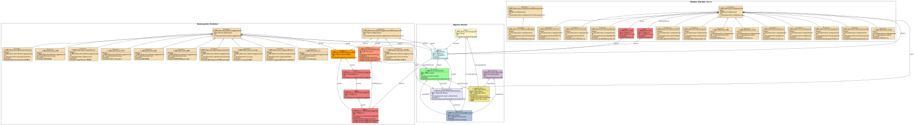

Links: Table of Contents | QA Report
http://fhir.de/CodeSystem/Kontaktebene
http://fhir.de/CodeSystem/kontaktart-de
urn:iso:std:iso:11073:10101
urn:oid:1.2.276.0.76.5.514
This fragment is not visible to the reader
This publication includes IP covered under the following statements.
| Type | Reference | Content |
|---|---|---|
| web | tel:+4930450550137 | telecom : +49 30 450 550 137 , cabs@charite.de |
| web | snomed.info | 428311008 |
| web | snomed.info | 1258985005 |
| web | snomed.info | 302549007 |
| web | snomed.info | 45206002 |
| web | snomed.info | 44567001 |
| web | innovationsfonds.g-ba.de |
|
| web | www.charite.de |
|
| web | www.bihealth.org |
IG © 2024+ BIH-CEI
. Package t-cabs#0.1.0 based on FHIR 4.0.1
. Generated 2025-11-19
Links: Table of Contents | QA Report |
| web | gematik.de | Profile for arterial blood pressure. Compatibility: For the profile T_CABS_Observation_ArteriellerBlutdruck, compatibility with ISiK version 5.1.0 is aimed for, however it cannot be guaranteed that instances that are valid against T_CABS_Observation_ArteriellerBlutdruck are also valid against the ISiKBlutdruckArteriell |
| web | gematik.de | Profile for arterial oxygen saturation (SPO2) Compatibility: For the profile T_CABS_Observation_ArterielleSPO2, compatibility with ISiK version 5.1.0 is aimed for, however it cannot be guaranteed that instances that are valid against T_CABS_Observation_ArterielleSPO2 are also valid against the ISiKSauerstoffsaettigungArteriell |
| web | gematik.de | Profile for respiratory rate. Compatibility: For the profile T_CABS_Observation_Atemfrequenz, compatibility with ISiK version 5.1.0 is aimed for, however it cannot be guaranteed that instances that are valid against T_CABS_Observation_Atemfrequenz are also valid against the ISiKAtemfrequenz . |
| web | gematik.de | Profile for heart rate. Compatibility: For the profile T_CABS_Observation_Herzfrequenz, compatibility with ISiK version 5.1.0 is aimed for, however it cannot be guaranteed that instances that are valid against T_CABS_Observation_Herzfrequenz are also valid against the ISiKHerzfrequenz . |
| web | gematik.de | Profile for body weight. Compatibility: For the profile T_CABS_Observation_Koerpergewicht, compatibility with ISiK version 5.1.0 is aimed for, however it cannot be guaranteed that instances that are valid against T_CABS_Observation_Koerpergewicht are also valid against the ISiKKoerpergewicht . |
| web | gematik.de | Profile for body temperature. Compatibility: For the profile T_CABS_Observation_Koerpertemperatur, compatibility with ISiK version 5.1.0 is aimed for, however it cannot be guaranteed that instances that are valid against T_CABS_Observation_Koerpertemperatur are also valid against the ISiKKoerpertemperatur . |
| web | gematik.de | Profile for an organization associated with the T-CABS study. Compatibility: The T_CABS_Organisation profile aims for compatibility with the ISiKOrganisation version 5.1.0, however it cannot be guaranteed that instances valid against T_CABS_Organisation are also valid against the ISiKOrganisation |
| web | gematik.de | Profile for an involved person within the T-CABS study. Compatibility: The T_CABS_Practitioner_PersonMitFunktion profile aims for compatibility with ISiK version 5.1.0, however it cannot be guaranteed that instances valid against T_CABS_Practitioner_PersonMitFunktion are also valid against the ISiKPersonImGesundheitsberuf |
| web | github.com | Note: The content is defined by the medical staff of CABS and coded by the Berlin Institute of Health (BIH). If codes are missing, please create a Github Issue . |
| web | snomed.info | 428311008 |
| web | snomed.info | 1258985005 |
| web | snomed.info | 302549007 |
| web | snomed.info | 45206002 |
| web | snomed.info | 44567001 |
| web | t-cabs.charite.de | Project Website |
| web | github.com | Technical questions or comments: thimo-andre.hoelter[at]charite.de or Github Issues |
|
Logo_Charite.png |
|
T-CABS_Logo.png |
|
T-CABS_UML.svg  |
tree-filter.png 
|